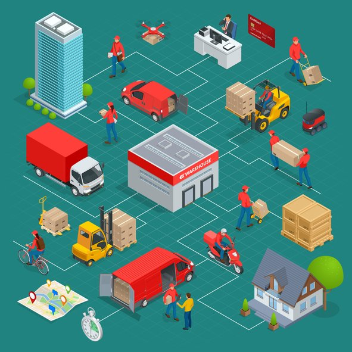

|  |
| Nuestra Responsabilidad Todas las colecciones se cortan y cosen 100% a medida en proceso, lo que implica meses de selección de telas, iteraciones de ajuste y una estricta supervisión de fabricación. Desde la fabricación, los productos se verifican, organizan, empaquetan y etiquetan en nuestro propio almacén y luego se envían a los clientes. Incluso nuestro equipo de servicio al cliente es completamente interno, nunca se subcontrata más allá de nuestro pequeño y dedicado equipo. |
|
Al elegir los materiales que se utilizarán para los nuevos productos, evaluamos cada elemento individualmente para brindar la mejor calidad, el mayor desgaste y minimizar el impacto ambiental. Nuestra líneas de ropa utilizan algodón cultivado en los EE. UU., Y todos los tejidos, teñidos y acabados se realizan en El Salvador. Con frecuencia buscamos nuevas opciones tecnológicas, especialmente en lo que respecta al embalaje y envío. Si bien actualmente utilizamos sobres de polietileno reciclables, también estamos examinando otras opciones, incluidas bolsas de envío de papel compostables, recicladas y extra gruesas. Todas nuestras bolsas de envío se producen en los EE. UU., Están hechas con un mínimo de 30% de contenido reciclado y son reciclables con la recolección de película plástica en la mayoría de las áreas (al igual que la mayoría de las otras bolsas de envío, ¡no las mezcle con la basura! ). Nuestro almacén de distribución tiene su sede en San Salvador, El Salvador, a solo unos kilómetros de donde se produce nuestro mayor volumen de ropa, lo que reduce el impacto de las emisiones del transporte, uno de los mayores problemas en la producción sostenible. Fabricamos localmente para reducir nuestra huella de carbono. No somos moda rápida, producimos artículos de calidad y atemporales que deberían estar contigo durante mucho tiempo. |